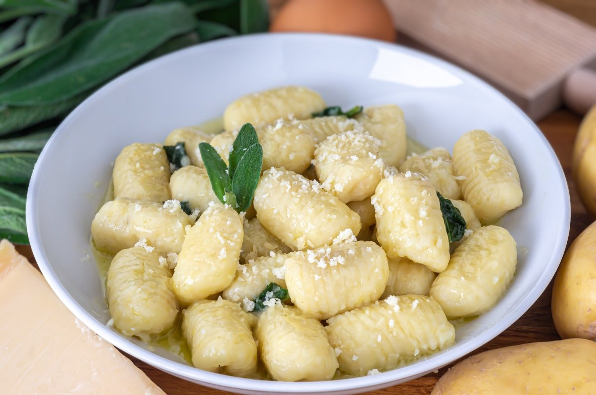

Gnocchi de Patata
Tiernos gnocchi de patata, una pasta tradicional italiana.
Ingredientes
- 500 g de patatas
- 150 g de harina de trigo
- 1 huevo
- Sal
- Salsa de tomate o pesto

Instrucciones
- Cuece las patatas y haz un puré.
- Añade el huevo y la harina.
- Amasa y forma los gnocchi.
- Cuécelos en agua hirviendo hasta que floten.
- Sírvelos con la salsa de tu preferencia.
Consejos
- No trabajes demasiado la masa para evitar que quede dura.
¡Deliciosa pasta casera!